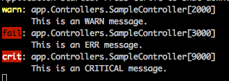

Logging
In this lab we're going to apply some of the recommended best practices around logging and error handling when using containers.
Note: In the following <Docker ID> denotes your Docker Store user name. If you don't have an account on Docker Store please create one here (it's free): https://store.docker.com/signup
The project folder for this exercise is ~/ddev-labs/logging.
Logging in Java
In this exercise you're going to create a Test controller in the Java API of our workshop sample application which logs events to STDIN such as that these events can be picked up by a logging aggregator. We use slf4j (Simple Logging Facade for Java) for this (https://www.slf4j.org/).
To the folder
api/src/main/java/com/docker/ddev/controllerwe have added a fileTestController.javawith the following content:package com.docker.ddev.controller; import org.springframework.http.HttpStatus; import org.springframework.http.ResponseEntity; import org.springframework.web.bind.annotation.PathVariable; import org.springframework.web.bind.annotation.RequestMapping; import org.springframework.web.bind.annotation.RequestMethod; import org.springframework.web.bind.annotation.RestController; @RestController @RequestMapping("/api") public class TestController{ @RequestMapping(value = "/factorial/{number}", method = RequestMethod.GET) public ResponseEntity<String> getFactorial(@PathVariable("number") long number) { Long fac = calcFactorial(number); return new ResponseEntity<String>(Long.toString(fac), HttpStatus.OK); } private Long calcFactorial(long number){ if(number == 1) return number; return number * calcFactorial(number-1); } }Run the application with:
ubuntu@infra:~$ cd ~/ddev-labs/logging ubuntu@infra:~/ddev-labs/logging$ docker-compose up --buildAnd test the new endpoint:
ubuntu@infra:~/ddev-labs/logging$ curl localhost:8080/api/factorial/12you should see the value
479001600returned.Our function seems to work, but it isn't providing any logging information. Add the following 2 import statements to the class in
TestController.javato allow us to define a logger:import org.slf4j.LoggerFactory; import org.slf4j.Logger;Add a static logger to the class:
... public class TestController{ static final Logger logger = LoggerFactory.getLogger(TestController.class); ...Now we can introduce logging to give us some more information to help us analyze what's going on in the system. Modify the
getFactorialfunction to look like this:public ResponseEntity<String> getFactorial(@PathVariable("number") long number) { logger.debug("Entering getFactorial with number {}", number); logger.info("Calculating factorial for number {}", number); if(number < 0){ String msg = "Cannot calculate factorial for negative numbers"; logger.error(msg); return new ResponseEntity<String>(msg, HttpStatus.BAD_REQUEST); } if(number > 20){ String msg = "Cannot calculate factorial for numbers > 20"; logger.error(msg); return new ResponseEntity<String>(msg, HttpStatus.BAD_REQUEST); } Long fac = calcFactorial(number); return new ResponseEntity<String>(Long.toString(fac), HttpStatus.OK); }We have instrumented our function with debug messages at the entry- and exit point. We also generate a log message of type info every time we try to calculate the factorial.
The file
api/src/main/java/com/docker/ddev/controller/TestController.javashould look like this after the changes:package com.docker.ddev.controller; import org.springframework.http.HttpStatus; import org.springframework.http.ResponseEntity; import org.springframework.web.bind.annotation.PathVariable; import org.springframework.web.bind.annotation.RequestMapping; import org.springframework.web.bind.annotation.RequestMethod; import org.springframework.web.bind.annotation.RestController; import org.slf4j.LoggerFactory; import org.slf4j.Logger; @RestController @RequestMapping("/api") public class TestController{ static final Logger logger = LoggerFactory.getLogger(TestController.class); @RequestMapping(value = "/factorial/{number}", method = RequestMethod.GET) public ResponseEntity<String> getFactorial(@PathVariable("number") long number) { logger.debug("Entering getFactorial with number {}", number); logger.info("Calculating factorial for number {}", number); if(number < 0){ String msg = "Cannot calculate factorial for negative numbers"; logger.error(msg); return new ResponseEntity<String>(msg, HttpStatus.BAD_REQUEST); } if(number > 20){ String msg = "Cannot calculate factorial for numbers > 20"; logger.error(msg); return new ResponseEntity<String>(msg, HttpStatus.BAD_REQUEST); } Long fac = calcFactorial(number); return new ResponseEntity<String>(Long.toString(fac), HttpStatus.OK); } private Long calcFactorial(long number){ if(number == 1) return number; return number * calcFactorial(number-1); } }Now run the application:
ubuntu@infra:~/ddev-labs/logging$ docker-compose up --buildAnd test it for different numbers while observing the output in the console:
ubuntu@infra:~$ curl localhost:8080/api/factorial/10; echo ubuntu@infra:~$ curl localhost:8080/api/factorial/-2; echo ubuntu@infra:~$ curl localhost:8080/api/factorial/22; echo ubuntu@infra:~$ curl localhost:8080/api/factorial/0; echoIn the case of
22you should see something similar to this in the terminal:api_1 | 2017-07-12 14:39:04.562 INFO 1 --- [nio-8080-exec-1] c.docker.ddev.controller. TestController : Calculating factorial of 22. api_1 | 2017-07-12 14:39:04.563 ERROR 1 --- [nio-8080-exec-1] c.docker.ddev.controller. TestController : Cannot calculate factorial for numbers > 20Notice that by default logging messages with loglevel
debugare not output. Discuss with your peers what change would need to happen to see debug level messages.Clean up with
docker-compose down.
Optional: Logging in .NET Core
We can do a similar exercise in .NET Core as we have done in Java. Here we'll use log4net, which is a port of log4j, as our logging library.
Add a project folder
logging-netto the lab folder~/ddev-labs/logging, and navigate there.Create an example controller in a file
SampleController.cs:using Microsoft.AspNetCore.Mvc; using Microsoft.Extensions.Logging; namespace app.Controllers { [Route("")] public class SampleController : Controller { ILogger _log; public SampleController(ILogger<SampleController> logger){ _log = logger; } [HttpGet] public string Get() { return "Sample controller"; } [HttpGet("/info")] public string Info() { _log.LogInformation(1000, "This is an INFO message."); return "info"; } [HttpGet("/warning")] public string Warning() { _log.LogWarning(2000, "This is an WARN message."); return "warning"; } [HttpGet("/error")] public string Error() { _log.LogError(3000, "This is an ERR message."); return "error"; } [HttpGet("/critical")] public string Critical() { _log.LogCritical(9000, "This is an CRITICAL message."); return "critical"; } } }Gist: http://bit.ly/2tEsLpG
Create a
Dockerfilein this directory to generate your app:FROM microsoft/dotnet AS build RUN mkdir /app WORKDIR /app RUN dotnet new webapi COPY SampleController.cs /app/Controllers FROM microsoft/dotnet:2.1-sdk RUN mkdir -p /app WORKDIR /app COPY --from=build /app/app.csproj /app/. RUN dotnet restore COPY --from=build /app/* /app/ ENV ASPNETCORE_URLS http://+:80 EXPOSE 80 CMD ["dotnet", "run"]Build the image:
ubuntu@infra:~/ddev-labs/logging/logging-net$ docker image build -t logging-net .Run a container:
ubuntu@infra:~/ddev-labs/logging/logging-net$ docker container run --rm -it \ -p 5000:80 logging-netTest the API via
curl localhost:5000/info. You should get a responseinfo.Curl
/warning,/errorand/critical. Notice in the terminal that you get something like this:/
Note that the info message did not make it to the terminal. Why?
Optional:
- Change the application such as that info messages also get reported.
- Add a
/debugendpoint which generates a debug log message and make sure it is reported in the terminal
Kill off your container with
CTRL+C.
Optional: Logging in Python/Flask
To demonstrate the same principles in a different language and framework let's create an API similar to the one we did in .NET Core but this time using Python and Flask.
Add a file
server.pyto the project folder with this content:import logging from logging.handlers import RotatingFileHandler from flask import Flask app = Flask(__name__) app.logger.setLevel(logging.DEBUG) # create a console logger ch = logging.StreamHandler() ch.setLevel(logging.DEBUG) formatter = logging.Formatter('%(asctime)s - %(name)s - %(levelname)s - %(message)s') ch.setFormatter(formatter) app.logger.addHandler(ch) @app.route('/') def index(): app.logger.info('This is a Python/Flask sample API') return "This is a Python/Flask sample API" @app.route('/info') def info(): app.logger.info('This is an info message') return "info" @app.route('/warning') def warning(): app.logger.warning('This is a warning message') return "warning" @app.route('/error') def error(): app.logger.error('This is an error message') return "error" @app.route('/critical') def critical(): app.logger.critical('This is a critical message') return "critical" if __name__ == '__main__': app.run(port=3000, host="0.0.0.0")Gist: http://bit.ly/2uz8Dbi
Add a file
requirements.txtto the project folder with this content:flaskNow add a
Dockerfilewith these instructions:FROM python:2.7 RUN mkdir -p /app WORKDIR /app COPY requirements.txt /app/ RUN pip install -r requirements.txt COPY . /app CMD python server.pyBuild the Docker image:
ubuntu@infra:~/ddev-labs/logging$ docker image build -t logging-flask .And run a container:
ubuntu@infra:~/ddev-labs/logging/$ docker container run \ --rm -it -p 3000:3000 logging-flaskHit your app with
curl localhost:3000/info,/warning,/errorand/criticaland confirm these work as expected.
Conclusion
In this lab we have created some sample apps that generate log messages of different levels of severity. When thinking about logging in containerized applications, remember that your application may be replicated and distributed across many containers, services, and datacenters; will ops be able to put any given log message in context with the logs of the rest of your distributed application? Try to offer information that will help operations not only understand this individual process, but how it fits into the larger application as a whole, where relevant.